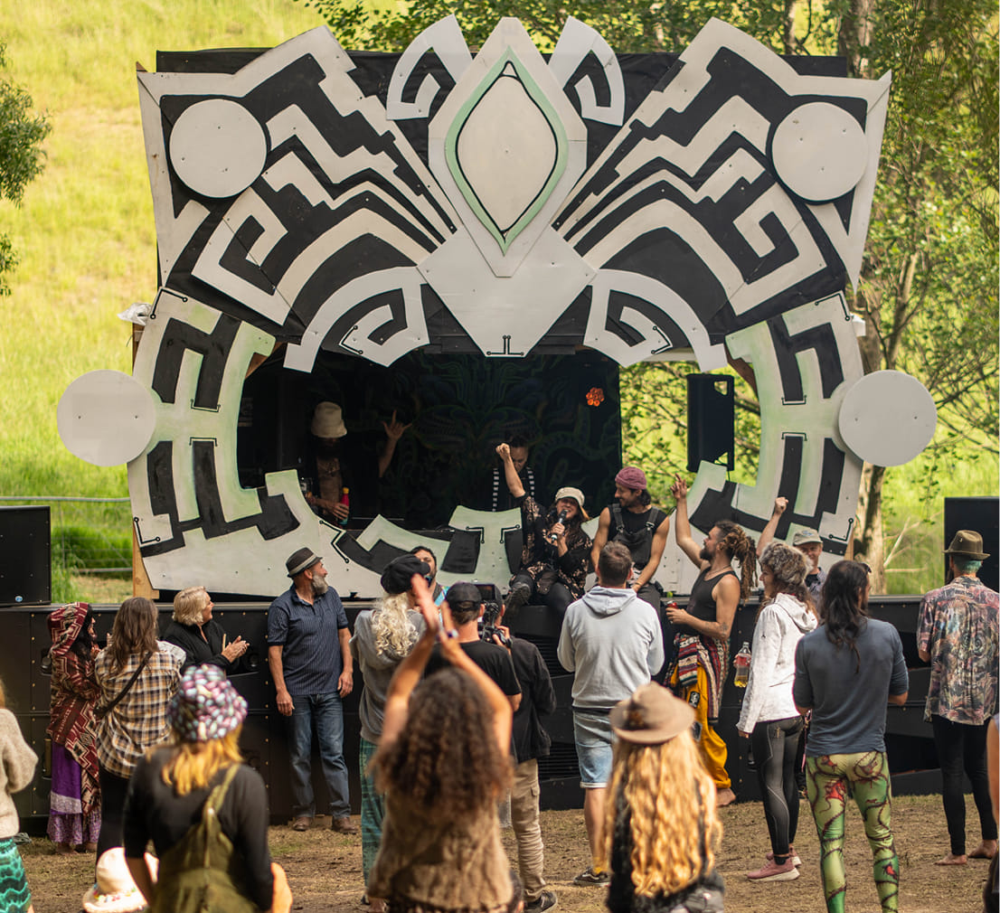
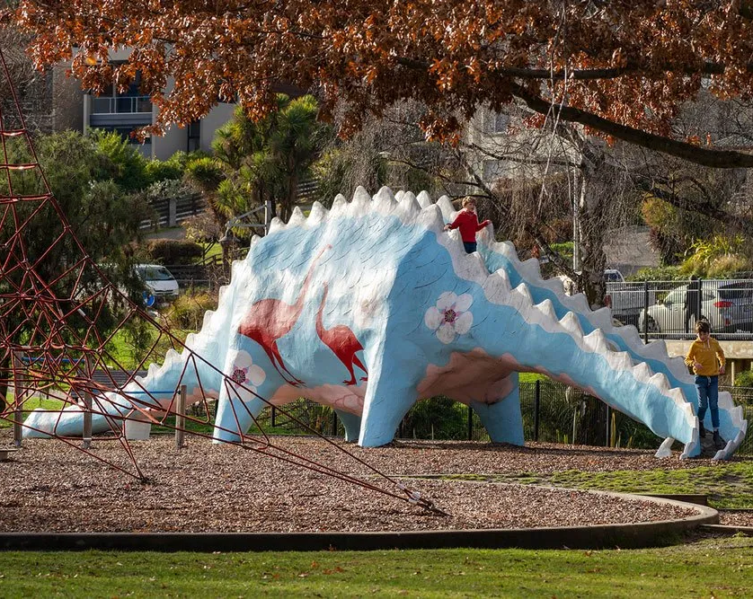

Episodes
Bathtime Relaxation
Fill the bath with hot water and bubbles, light an excessively high number of candles and lie back and relax. This set aims to create a medative and calming sound to let your mind and body relax.
Released: December 24, 2024
Listen to Episode

Techival Ambient Set
Bonus episode! Recording of my set from last year's Techival event. A synth heavy ambient set which I am very proud of.
Released: December 25, 2024
Listen to Episode

Dino Park Vibes
Bonus episode! Recording of one of my dino park DJ sessions while friends would flow, slackline and hangout. The mix is instrumental tracks with very laid back chill vibe.
Released: December 25, 2024
Listen to EpisodeSubscribe to the Podcast